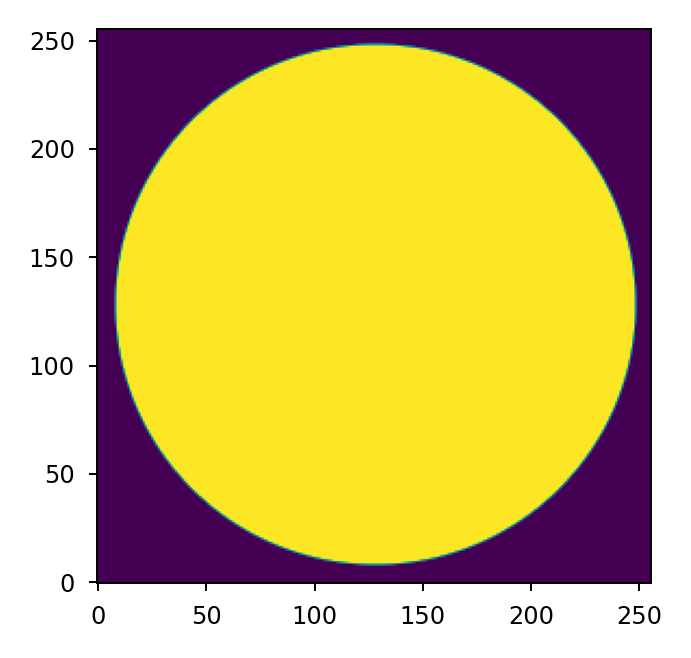
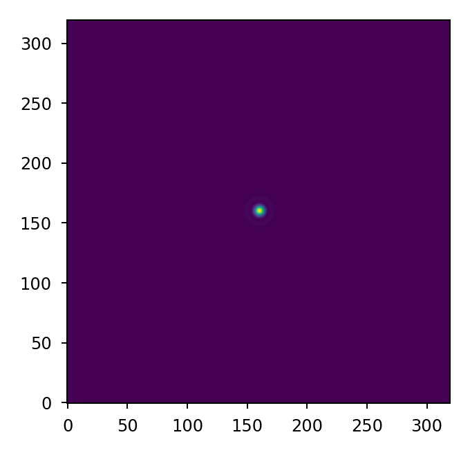

Quickstart#
This is a short introduction to Lentil, mainly written for new users. More complex recipes are available in the Cookbook.
First, we import Lentil:
>>> import lentil
We’ll also import Matplotlib to visualize results:
>>> import matplotlib.pyplot as plt
Note
Lentil is “unitless” in the sense that it doesn’t enforce a specific base unit. All calculations are well behaved for both metric and imperial units. It is important that units are consistent however, and this task is left to the user.
That being said, it is recommended that all calculations be performed in terms of either meters, millimeters, or microns.
Creating planes#
Most Lentil models can be constructed using Pupil and Image planes. We’ll
create a circular Pupil with a focal length of 10 meters and a diameter of
1 meter:
>>> amp = lentil.circle(shape=(256,256), radius=120)
>>> pupil = lentil.Pupil(amplitude=amp, pixelscale=1/240, focal_length=10)
>>> plt.imshow(pupil.amplitude, origin='lower')

Note the diameter is defined via the pixelscale
attribute:
Here, we’ll create an Image plane with spatial sampling of 5 microns,
represented here in trems of meters:
>>> image = lentil.Image(pixelscale=5e-6)
Diffraction#
Pupil to image plane propagation#
The simplest diffraction propagation is from a pupil to image plane. Here, we
construct a Wavefront with wavelength of 650 nanometers, again represented
in meters:
>>> w = lentil.Wavefront(wavelength=650e-9)
Next, we’ll propagate the wavefront through the pupil plane we defined above.
Lentil uses multiplication represent the interaction between a Plane and
Wavefront:
>>> w = w * pupil
Finally, we’ll propagate the wavefront to a discreetely sampled image plane
using propagate_image(). In this case, we’ll sample
the result every 5e-6 meters and perform the propagation 3 times oversampled:
>>> w = w.propagate_image(npix=64, pixelscale=5e-6, oversample=5)
The resulting intensity (point spread function) can now be observed:
>>> plt.imshow(w.intensity, origin='lower')
